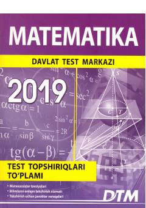

M2Matematika fanidan 2019-yilgi kirish test sinovlari to'plami va tavsiyalar.
Ushbu to'plam O'zbekiston Respublikasi oliy ta'lim muassasalariga kirish test sinovlarida foydalanilgan matematika fanidan 2019-yilgi test topshiriqlarini o'z ichiga oladi. Kitob abituriyentlarga imtihonga tayyorgarlik ko'rish, bilimlarini sinash va test yechish ko'nikmalarini oshirishda yaqindan yordam beradi shuningdek foydali maslahatlar taqdim etadi.